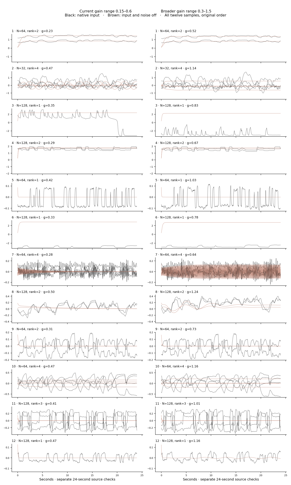

First pretraining test: V6 · frozen ↗. This page is an exploratory comparison.
More recurrent feedback?
Same sampled networks. Current gain range 0.15–0.6 versus broader range 0.3–1.5. Only feedback gain changes.
32.000 s
Loading…
Outside input · identical in both recordings
Network response
Spatial amplitude driver
Observed input · voltage → STFT
Selected contact · current black / broader gray
Does activity continue without input? · all twelve samples
Separate 24-second source checks. Same initial condition in each pair. These are not the rendered recording above. Choose feedback coordinates or the first eight network variables; both sides share a vertical scale. Neither view uses fitted PCA.
With native input
Input and noise off
What this comparison establishes
Broader gain increases driven fluctuation amplitude in 11/12 sampled networks, but does not reliably prevent autonomous settling. One previously oscillating example settles. These are descriptive source checks, not evidence of improved learning.
First six worlds rendered; all twelve source checks retained. No replacement seeds. A larger fluctuation is not proof of chaos, cortical realism or better pretraining. The first two fixed feedback coordinates divided by √N are shown above; source checks show all rank coordinates. Source normalization and recording calibration use the same rules, recomputed separately. The viewer does not change the handoff sampler.
